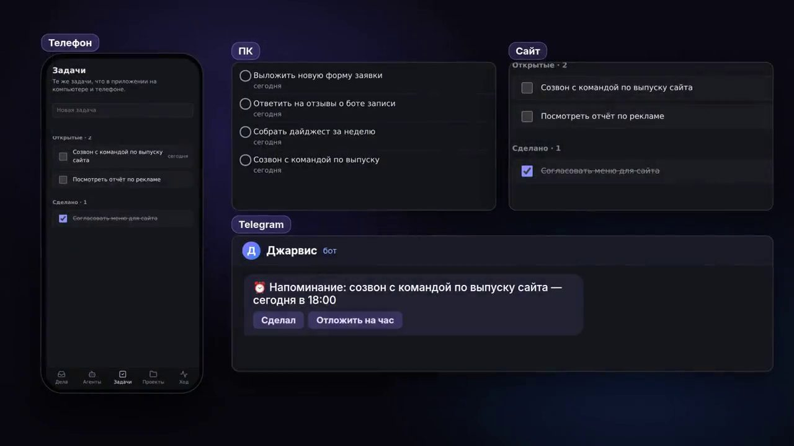

Internal tools and business automation, end to end
A new tool for one team, automation for a department or the whole company, support for tools that already run. I work out the task, build it, launch it and keep it running. AI agents write most of the code; I own the result.
Message me on Telegram
What I built

AI coordinator for a team
At a company with its own brands on Amazon, a coordinator agent read the team's tasks and chat on its own, split the work between its agents and brought finished work back for review. People kept setting tasks the usual way, with no new tools and no manual hand-off. It runs on my own agent system: a separate agent checks the result and a guard stops risky actions. The screenshot shows another agent of the system, the meeting secretary. I can set up the same scheme in your team.

Payments instead of Excel
A company with brands on Amazon kept its payments in a large Excel workbook. I brought orders, supplier payments, instalments and expenses into one service: the owner saw expenses a year ahead, a built-in check against accounting found unit-cost mismatches on its own, and the ads team got each new week in its own spreadsheet without copying by hand.

Amazon product watch
When a product's rating dropped, the buy button disappeared or a listing got blocked, the team learned about it the same day in its work chat and fixed it before sales fell. Customer complaints about defects from reviews landed there too.
How I start at a company
Week one: where the manual work is
I look through the team's tasks, spreadsheets and chats and find the place where people spend the most time repeating the same steps by hand or lose money on mistakes.
Week two: first result
I build a solution for one such place and run it on your live data. The team keeps working as usual, with no new tools and no long training.
Then: one step at a time
I show what changed and suggest the next place to automate. Every step is visible and checked before the next one starts.
More from the system
My own agent system
I run a team of AI agents on my own server: every project has its own agent, and I give tasks by voice through my assistant Jarvis. I can set up the same system on your server so your data stays inside.
Agent safety
A guard checks every agent command before it runs and stops anything risky. Keys and passwords are hidden from the model, and text from emails and web pages is treated as data, not as instructions. Money, sending on someone's behalf and deleting happen only after that person says yes.
Meeting secretary
After a call it turns what was agreed into tasks: who does what and by when. Nothing is lost by the evening, and nobody has to rewatch the recording.
Looking for a team that needs this
Remote: full-time, part-time or contract. Russian is my native language, written English is fine (B1).
Message me on Telegram